SECOND LIFE SCHOOL
BEGINNERS GUIDE
a manual for getting started
INTRODUCTION

a true virtual world comes with a lot of complexity
luckily it is less complicated than the real world,
so i can teach you how to play
i am finally putting my knowledge and guidance into a manual that can help people get into the game
on their own without having to hope someone will take the time to teach them all of this.. and without spending months confused and unaware of important features
for the lesson i will be following a structure that has crystalized after a lot of experience guiding and teaching new users.
this is a
beginners guide on
how to play it and everything you need to know to get your start
if you don't know what second life is,
the wikipedia article sums it up well.
my second life diary offers a glimpse on what playing it is like, i photograph lots of different avatars and locations
before we continue, ask yourself:
1.) are you over 18?
2.) are you open minded about different forms of expression, NSFW or not? (roleplay, furry, anime, etc..)
3.) do you like to 'make your own fun' (open ended experiences)?
4.) can your computer run graphical games with relative ease?
if the answers to any of these are no, second life may not be for you.
especially the first one, kids shouldn't play SL.
there is a ton of adult content and some of it can be considered extreme
second life can be complicated and sometimes confusing
if you can handle it, what waits for you is a beautiful and endlessly deep virtual experience
third party clients are usually better than the default second life 'viewer' (client)
this tutorial will be based on the
FIRESTORM VIEWER
most of the knowledge should transfer over to other viewers
some viewers may run better on different computers, you can try other ones if you find firestorm is too slow
(third party viewer directory)
some things in this manual may be firestorm specific
lets begin the lesson!
CHAPTER 1. BASICS
first, create a second life account if you haven't
enter your information into the viewer, and log in.
the first time you log in, you'll probably be in some sort of a 'tutorial area'
you are free to do this tutorial, but i'll be going over the same few things the tutorials tell you regardless
here are some safe places to go to while you get your footing
CONEJO ISLAND
FUWORLD
FIRESTORM SANDBOX
we begin with boring menu stuff/fun settings stuff :)
for the sake of a smooth experience, we will get these out of the way now. you will thank yourself later.
Ctrl+P to open Preferences
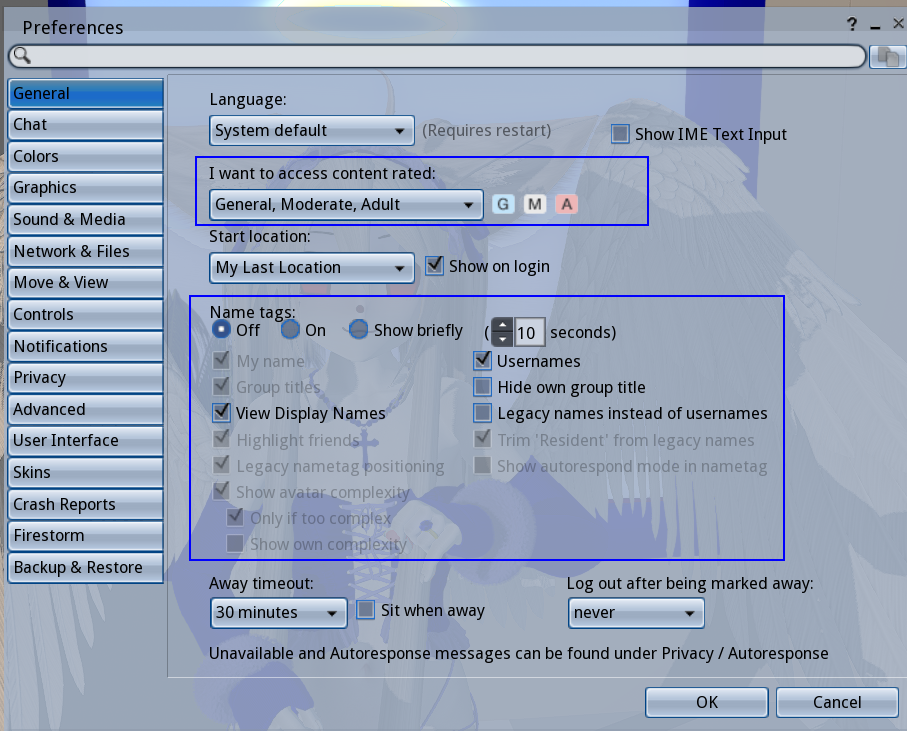
we can check the General tab first,
content ratings should be G, M, A
of course, you can limit the rating if you wish..
conejo is an Adult region, while most mainland regions tend to be Moderate
adult content is scattered all over second life, is not exactly well-regulated but the ratings still hold some weight
Adult regions tend to guarantee some explicit form of it, though it varies from region to region
Moderate regions are in-between, adult content seems to be ok but only in private? i don't see people get in trouble for nudity in these regions, but it depends on who owns it, everybody sets rules for their own land.
General regions are the only ones that allow 16-17 year old users and are supposed to be 'family friendly' and not allow nudity or adult content. but again, it all comes down to who owns the land/region itself.
we can also set some
other things here in the General preferences tab,
like the appearance of Name Tags and what names are shown (Display name, Username, and Group title)
as you can see in the screenshot, i have name tags turned off.
this is just a personal preference because i like how it looks.
OPTIONAL: go to the 'Chat' tab under General and check this to enable chat bubbles in firestorm. if you have nametags off, you will see names only when people speak. its a nice detail to have.
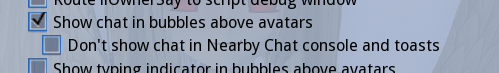
jump to the Graphics tab.

you can set a preset here, and fine tune for performance when you need to.
i suggest lowering Draw Distance and disabling Shadows first if your game is slow.
second life is notoriously laggy. this is primarily due to all the unoptimized user content, the age of the game and to an extent, linden labs negligence.
there are already a few guides out there on how to 'optimize', so we will move on
next, jump into Move & view.
under the Movement category, these should be checked:
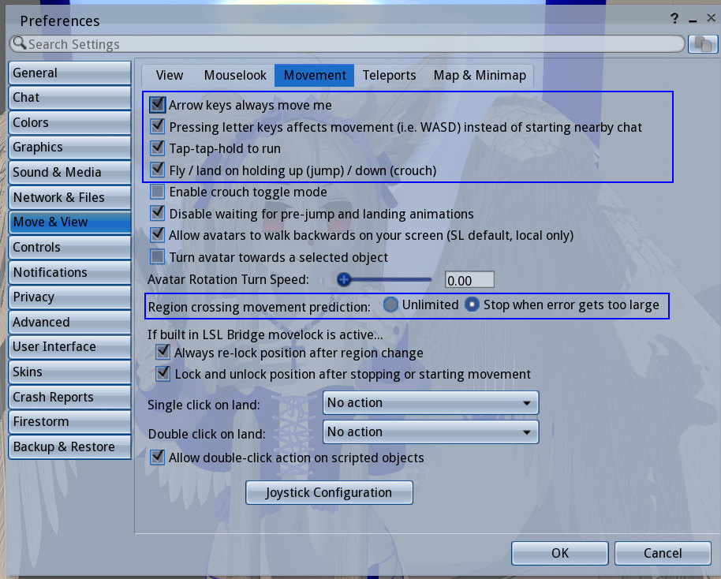
i also recommend going under User Interface and unchecking 'Use Pie Menu' since i will not be referring to it for this tutorial

really its much too easy to make clumsy moves with the pie menu.. life got easier when i did this
aside from what i've highlighted, there are lots of things you can tweak with Preferences.. chat colors, skins, UI font size, etc.
i suggest you do a run through all of them when you have the time..
here are two extra settings you might find yourself wanting to set
now lets look under the 'Avatar' menu on the top bar, upper left corner

first, click 'Toolbar Buttons' at the very bottom
this will bring up a window with every possible button you can put in your tool bar
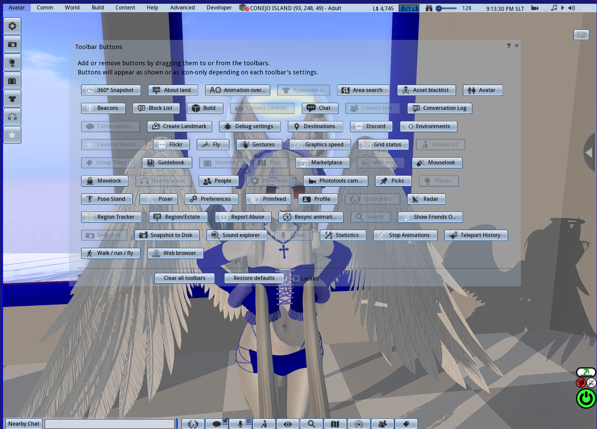
you can see in my screenshot my toolbars look a certain way,
i've removed some buttons and added others.
using this menu you can arrange things to be nicer for yourself and also get a quick overview of what buttons do and what you're working with.
while we're at it, you can right click the tool bar itself and access this little menu

this changes the look and arrangement. again, you can make it comfortable for yourself
go back to the Avatar menu, and look under 'Avatar Health'
the first half of this submenu is full of useful things.
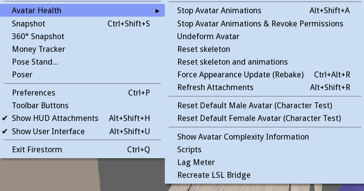
many times things will go wrong with your avatar, and a simple run through these is a good troubleshoot
the problem can often be solved with Refreshing Attachments, or Undeform, or Reset Skeleton and animations
as you play more, you'll learn which is needed when.
resetting the Default Avatar is also useful at times, and considering the appearance of the new style default avatars, i'd recommend using one of these two right now in the meantime.. its still a bit before we get to avatar making
i think theyre pretty cute


alright, now we can take a short break from UI stuff to learn how to actually move and interact with the world, with MOVEMENT CONTROLS and CAMERA CONTROLS!
WASD or arrow keys to walk around
& you can run by double pressing fwd
E to jump, if held down, you'll fly!
C to crouch (also lowers your altitude while flying)
CTRL+ALT+S to sit on the ground
hold down ALT for the amazing Object View,
a free-mode camera.. allows you to look anywhere
ALT+CTRL to Object View rotate!
ALT+CTRL+SHIFT to Object View pan!
we can also control the field of view with CTRL+8,CTRL+9 & CTRL+0 (increase, reset & decrease FOV)
i find Object View is most of the game for me, and i tend to fix my camera somewhere for long periods of time
INTERACT WITH OBJECTS
.. you can right click on them and select the 'sit' or 'buy' option to interact
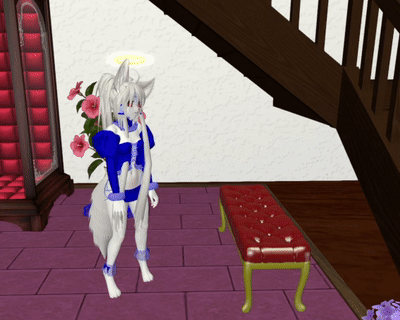
some objects allow you to interact just by touching them
..for sitting, many objects will bring up a menu you can use to change the animation
now let's talk about the 'world' itself
Open the Map menu with CTRL+M (or map button)

this menu locates you on the entire Second Life Grid, which is made up of many small squares called Regions
each is its own 'server' but you can cross them and it is essentially 'open world'
you can use this map menu to teleport, or to set checkpoint, etc, etc.
we can see more of the map if we click the small arrow on the right, like so:

if you zoom out far enough, you can see the 'Mainland', which are continents formed by many regions, and are connected by roads and waterways.
(there's a lot to say here, it will be its own article later)
another feature this menu has is the 'copy slurl' (SLURL = SECOND LIFE URL) button, which you can use to copy a link of whatever your coordinates are, and paste them into second life chat, web browser, chat apps, etc.
the scattered lone squares are individual 'private' regions that are seperate from the mainland
CONEJO is an example of a 'private' region.
all regions function the same, it is just who owns them and how they are paid for that makes a difference. you can only walk across regions if they are connected to eachother, and there are small island networks of 'private' regions forming user-made continents.
as you zoom into different regions, you can see the player count in each one, visually represented by small green dots. if you feel inclined to find people, one method people do is looking for the green dots..! this is also a good way to find botfarms.
if you want, you can type 'CONEJO ISLAND' into the text box and teleport directly. this goes any region names you know.
next, we'll look at the Mini-Map, which can be opened with CTRL+SHIFT+M
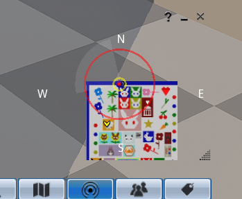
the mini map is very useful, but to a new user, it will look grey, or covered in blocks of color.. that makes it harder to tell where you are
so right click the minimap, and uncheck Objects under 'Show'
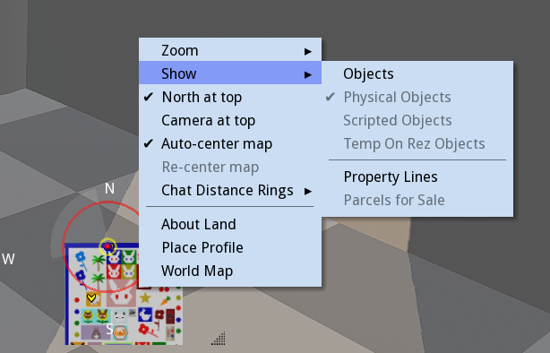
now the mini map should look a lot cleaner!
as you can see, theres a couple other things i can have checked. do whatever,..this is just what i like.
one last thing here is the 'chat distance rings' which can help you see who's in your chat range!

.. often you'll speak to someone only to realize they didn't hear you. you can use these rings to tell when its appropriate to shout and whisper!
now to talk about communication!
in second life, residents can communicate through
voice chat or text chat
sometimes both are used at the same time in the same place
still there are the text-oriented places and the voice-oriented places..
in CONEJO, for example, we mostly use text chat
i've found that second life is mostly text-first, with a majority of people willing to voice chat if asked
by default, voice is activated with the middle mouse button
there are two types of chat in second life, 'nearby' and 'direct'
nearby chat is where you type into automatically, with nearby you are communicating to those in your vicinity
it is the 'physical' chat
like i mentioned earlier, you can whisper (hold shift while entering message) or shout (hold ctrl while entering message) to affect different 'nearby' ranges
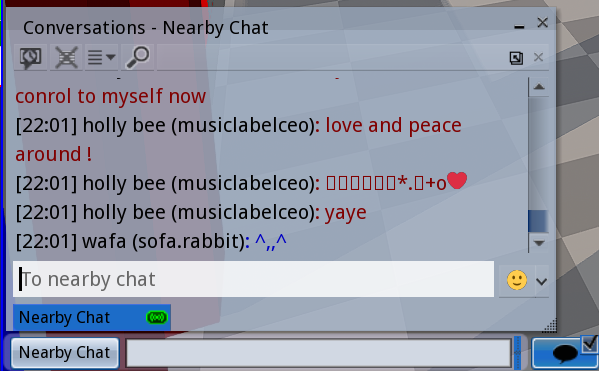
my chat window looks like this.. depending on your settings, it will look different, but the basics is just the log itself and the tabs.

direct messages or 'IM' is a private chat between you and another person,
every IM you open will appear as a tab in your chat menu.
if you IM someone and theyre offline, it will probably save the message..
but there is a chance the message won't go through for one reason or another.
also, do make sure you know where
you're typing! its a little confusing early on, since nearby and IM tabs can look almost the same
as you meet people, you'll probably want to keep in touch or know when theyre online
the 'People' button or 'Contact sets' menu will let you see your friends list
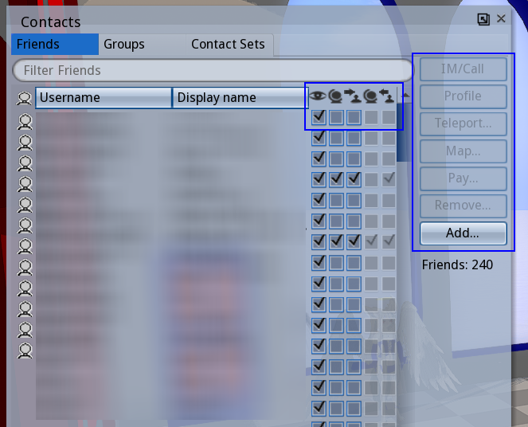
from here, you can IM your friends, send them teleports, pay them linden, etc.
you can also set certain permissions for certain friends, like allow them to edit your objects, locate you on the map and teleport to you, and whether they can see your online status or not
(but just for the record that ones only client side).. you can also see what permissions they've given you here
there is also the 'Groups' tab.. GROUPS. ..second life has groups!

they are usually used for notifying residents, but there are interest-based groups as well, where you can meet other people or ask questions about certain topics (groups tend to have their own IM-group-chat)
groups also grant you titles, which appear above your name tag.
you can right click the groups to 'activate' your group title, or use 'none' to be title-less
the last thing i'll put in this social section is the Profile, which isn't exactly a crucial thing, but can be useful to fill up early on. many second life users tend to check the profile of residents they haven't seen before for a 'sniff'
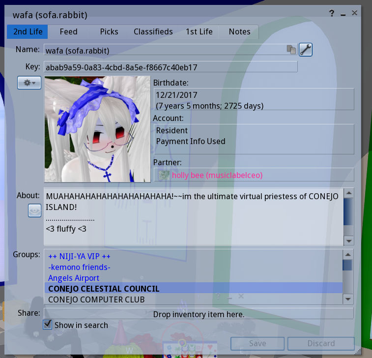
to see your own profile, go to Avatar > Profile
here we can set a short(or long) description, set what groups are visible to others, set a picture (if through firestorm it must be uploaded, i'll be talking about how to upload textures real soon), and
set our display name
the display name will appear next to your username, and you can only change it once a week
there are also the 'picks' and '1st life' tabs, these are more optional
Picks are landmarks to places you like, but are usually used as an extended profile by many players
1st life is the place for stuff related to real-life
to see someones profile, right click them and click 'view profile'
it can be fun to see the profiles of others, and you can learn things from it too
sometimes you even learn about a new group or place so dont be afraid to look
now to wrap up the 'basics' section with some extra details..
investigate the top bar
you can right click it to toggle different information according to your taste. there are uses for the stuff i have unchecked
with location enabled, you can see the region name, rating, your exact coordinates and what land permissions the land you're on has
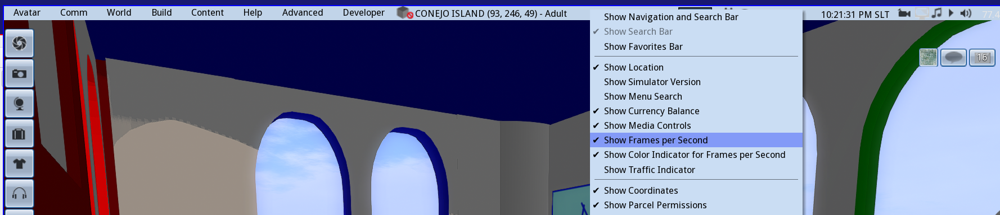
up here you'll see your Linden balance, and in my firestorm skin i am able to set the Draw Distance up there too.

there is also the time in 'SLT' (which is just Pacific Standard), events may use 'SLT' for schedules, it is sometimes used as a standard to schedule with people across timezones
also shown here is FPS, and the sound & media settings.
the music note icon will toggle the land's music stream, if your media is set to play by default you can turn it off with this button.. this ability to stream sound through the land is how clubs play their music, though you may find a lot of places just have a music stream going anyway.
notifications of four types will pile up in the 'letter' looking icon.. its nice to clear it often.
and of course we've got the IM and groupchat notifications next to it, you can see and open ongoing IM communications with these icons
this button may or may not already be in your toolbar already, but dont neglect the
'Quick Prefs'

theres a lot of useful little things here that you may not understand now but appreciate later, so keep that button on sight. you can actually add stuff to it if you someday desire..
TAKING SCREENSHOTS
to open the Snapshot Menu, press CTRL+SHIFT+S
this menu shows us second life's built in screenshot tool. you can automatically take and save screenshots with it, with no need for hiding the UI because it does it for you
you can click the two little arrows to toggle the compact Snapshot menu

this just makes the menu take much less space. you can go back and forth depending on your needs

at the top you can Refresh the frame..
you can also toggle how much of the interface is hidden in your screenshot

Auto-refresh just refreshes the picture with each frame..
theres also selection of Filters you can apply to your pictures
below we can set the size of the screenshot (preset or custom), the format, and filename settings

the first time you will be prompted for the location of the screenshot, but your viewer should remember the location if persist is checked. by default, it numbers the screenshots.
the microphone icon is the toggle for voice, if you don't want to accidentally keep the microphone on, leave the little box unchecked
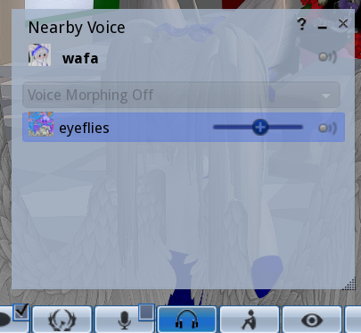
you can click that headphones icon to access the 'nearby voice' window, to see whos speaking and set different volumes for each person.
..and don't worry about 'voice morphing', its a paid feature not a lot of people use
CHAPTER 2: INVENTORY, OBJECTS, ENTITIES
now that we can move around and navigate the UI, its time to confront some deeper second life stuff.
knowing your way around the inventory early will make avatar creation a lot easier.
SL inventory is a little strange compared to most games.. this is where a lot of new residents get stumped.
open the inventory with the briefcase icon or CTRL+I
as you can see, the second life inventory functions much like a file system

these are the default folders.
you don't want to delete these,
you can add your own folders ontop or inside of them later.
let's understand the inventory menu..

at the top, we have the search bar. you may find yourself using this to look up items quickly.
there is also the 'collapse' and 'expand' buttons which close and open all the folders respectively.
next to it is the Filter, which is useful for limiting what type of item is visible in the inventory
and under all that we've got three tabs, 'Inventory', 'Recent', and 'Worn'
the 'Worn' tab shows only what your actively wearing, and the 'Recent' tab will only show objects from a recent time frame (which you can change)

onto the bottom part, we have a cog button with access to various settings, and next to it a plus button that allows you to easily create new folders and new entites
there is a briefcase button here too, which will open a second instance of the inventory menu.
there are many cases where it is useful to have at least two of these open, and you can open more than two
'x number Elements' simply tells you the amount of stuff in your inventory
most people will have a big button that says "Received Items" right here in the lower bar.
this is actually just a folder in your inventory, but its only filled with things you receive from the second life marketplace.
more on that later.
i have Received Items set so that it appears as a folder in my inventory.
you can do this too, though it may be confusing for players not used to finding things in their inventory
LETS LEARN ABOUT THE DEFAULT FOLDERS & OBJECT ENTITY TYPES
1.) Animations
animations do what you think they do!
these are
loose animations, you can click on one to open a small menu that allows you to play it


the idea is that you can insert animations into Scripted Objects, and from here we achieve things like animated furniture, animation overrides, dance huds, etc.
you can also just play the animation on its own

animations are often passed around groups of users, so i have many accumulated throughout the years, but there are also animations you buy from animation stores
2.) Body Parts & Clothing
these two folders contain things that are connected
before there was mesh in second life, avatars all used the same base mesh, customizing it with items that became known as 'body parts'
so skins, tattoos, eyes, pants, shirts, were all objects of their own category, and function as baked textures

nowadays, systems are in place so that these can now be used with uploaded mesh.. thank god!
for a while these were useless to modern avatars, but now they are compatible,
everybody wears their skin textures, tattoos, and more through this system
to avoid getting overwhelmed, lets just remember second life is strange and old, the features tend to be 'stacked' on top of eachother
for now we can just focus on ONE item type that resides in this folder called "Shape",
Shapes are items that will determine the slider proportions of your avatars body, and you can only wear one at once.
everybody has a shape, it's not possible to have no shape on
you can edit your current shape right clicking yourself, Appearance > Edit Shape
you can save that for later if you want, we'll be returning to shapes in the avatar section anyway..
3.) Current Outfit
a folder containing whatever you are currently wearing, the same things you see in the 'Worn' tab, except everything in here is a 'link' to the original
4.) Gestures
a social entity used for chat
this is another type of thing that gets passed around a lot, you willl accumulate a small collection with time

gestures can activate sound, text, and animations in a given sequence in response to either a shortcut or a text-command
you'll notice gestures are used a lot and they're pretty fun.
there is a term called 'gesture spam' that refers to when players either play a gesture repeatedly or spend an extended amount of time doing nothing but playing gestures.
its less amusing as years pass playing the game, but we all still like to have a good gesture spam every once in a while.

an example of a gesture that prints a bunch of text! these are known as 'club gestures'..
CONEJO has a free collection of gestures you can get here
now for a quick detour about the gesture menu
..see, in order to use gestures they must be 'activated'
right click a gesture, and click 'Activate'.. you must do this with every gesture you want to use
it may seem inconvenient, but there is a reason..
gestures all come with their own 'triggers'..
if gestures all activated automatically you might find yourself wondering why hitting the spacebar is activating a punching animation or fart sound.
it can be a little embarassing to mindlessly activate a gesture only to realize it causes you to make an undesired sound when you press a common key or say a common phrase
of course sometimes you like the gesture and keep it on.. its just good to check first.
double click a Gesture in your inventory, or right click one and select 'Edit' and you will see the following menu

here you can see what the chat 'Trigger' and Shortcut Key are (if there already is one), you can also Preview the gesture before activating it with the button below, and if you make any changes.. click 'Save'!
note what activates the gesture and if you think it should be changed, you can change the trigger and shortcuts of gestures how you like.. just keep in mind these effects will carry over if you transfer the gestures
a lot of times we may end up disabling certain gestures altogether because they interfere with conversation tone,
for example, you could eventually you realize you don't want that 'OK' sound gesture playing each time, so you can simply deactivate it. this is just one of the many ways you can fine tune expression in SL
accidental gesture activation becomes a rite of passage, and you won't be shamed for accidentally playing gestures during conversation
now you can access the Gestures menu with CTRL+g and see all your gestures!

this menu provides a reference for how the gestures you have active are triggered, and here you can do all the gesture dealings
5.) Landmarks
landmarks contain coordinates to a place (SLURL), and you can use these to go back to places or share them with friends.
you can make a landmark of any place any time, and landmarks you recieve will begin to pile up here
there is a menu for managing landmarks, called Places, which we can access through the toolbar or with 'ALT+H'

here you can see all your landmarks, create new landmarks, set favorites, share them to others, etc
you can also see your teleport history here, but keep in mind that these are not landmarks, so you cannot transfer them and they may dissapear
6.) Lost And Found
in the case you rez items in other peoples land or in a sandbox, things may be returned either by the owner or automatically
anything returned to you goes into the lost and found
you can periodically clear it like so:

7.) Materials
part of a recent second life update, materials are PBR shader texture settings that you can add to objects.
this is the most recent 'feature stacking' kind of thing.
i myself dont have a 100% grasp on PBR yet but luckily its not something a beginner needs to know
8.) Notecards
pretty much just textfiles

they can be a way to share information..
notecards are usually given inside of products for explanations, elaborations or manuals, but also used for other things, like communication & event notices.
notecards are often also crucial part of some scripts

9.) Objects
the main type of item, can be mesh or second life primitive

objects go into object folder by default, unless they were given to you as a folder
this goes for all items actually, but objects in particular is a folder that can become unruly if left unsorted.. these make up most of second life after all
10.) Outfits
link collections of objects, you can use this to save what you have on and wear it later

this is how people change avatars or outfit
usually we are not interfacing with outfits through the inventory, but this is where they are
stored and you can
right click > replace current outfit to wear a saved outfit from here
the outfits menu makes it easier to manage and change outfits though, and we can access the appearance menu with the T shirt button in the tool bar

11.) Scripts
scripts are written in the LSL programming language, and are responsible for a variety of things in second life

HUDS, furniture, animated objects, are all dependent on scripts
there are many pre-made scripts you can use/edit, or you can learn to make your own.
most objects you find in second life contain a script inside them!

12.) Settings
a somewhat misleading name, it refers to different settings for the Sky, Water & Day Cycle
in second life, you can change the look of the enviroment in various ways, and a couple years ago the enviroments became their own items in the inventory. this is one of the things i will save for a later lesson
there are some free Settings you can try out from the CONEJO lobby..

13.) Sounds

sounds are incorporated into gestures and scripts, and are not much use on their own, but you can play a sound outloud by clicking on it
sounds can only be 10 seconds max, and are uploaded as wavs
14.) Textures
textures! they are self explanatory. present all over second life, for everything.
max 1024x1024, but theres a recent option to upload 2k textures

15.) Trash
anything you delete will go in here. you should purge the trash regularly, just make sure theres nothing in there you might want back.
okay.. so thats all the item types and default folders.
there are also the'Library' folders, which contain a number of default objects.
these are seperate from your inventory, but you can make good use of them, and there are some useful things in here i still use all the time.
THE PERMISSIONS
all the objects in second life have three permissions:
COPY, MODIFY & TRANSFER
you will see (no copy), (no modify), (no transfer) next to the objects name depending on the permissions
COPY refers to the ability to make copies of the object
MODIFY referes to the ability to modify the item through the edit menu
TRANSFER refers to the ability to give objects to your friends
these permissions are important to be aware of, and pay attention to when you are buying objects or when you are making them.
for example, in many cases its best to avoid stuff that is NO MOD, because then you can't change the color or texture.
if something is NO COPY but still TRANSFER, then giving it away or deleting it will have it gone for good. things like that..
GOOD INVENTORY HABITS
~MAKE COPIES right click.. copy & paste! copy things any time you edit them. it will save you. copy objects for different avatars. back up originals.
~CATEGORIZE AND ORGANIZE don't let your inventory become a mess. i had to dedicate so much time later on to organizing, and it's not even 100%. it just becomes unmanagable after a while. start early.
you can use my categories as a guideline. if you have folders with themes and categories, you won't forget you have stuff.

CHAPTER 3: BUILD AND EDIT
for this next section, you can either go to the CONEJO sandbox where rez is enabled, or a public sandbox like MORRIS
it doesn't have to be these places. you can find yourself any rez enabled place for this next section..
but whats rez mean, anyway?
rez is the word used in SL for an object loading into the world, 'spawning' in.
when you drag something out from your inventory into the world, you rez it. when you log in, you rez in. objects can de-rez, etc.
most places have rez off because there are limits to how many objects can be placed on any land
with rez on, there is all sorts of possibilities for things to get lost, take up a huge number of limit, lag the sim with scripts, and other types of stuff that isn't good intentional or not.
but there are places with rez on, be it the small sized 'rez zones' scattered through roads or regions, or 'sandboxes' which are larger parcels of land with rez enabled (paired with an auto-return & time limit)
sometimes a place just has rez enabled anyway, in these cases its okay to rez a thing or two, but you might want to clean up after yourself.

is rez enabled here? look at the top bar, this icon means rez is disabled.. if its not present, then you're good to go
before we get into the rabbithole of avatar, its good to know how to rez your own objects and edit them
you'll be ready to edit anything you recieve.. or make your own prim items.. really, modifying and editing things is one of the best parts of second life!
BUILD & EDIT MENU
we can open the 'Build Menu' with CTRL+B,
this is actually just a portion of the entire edit menu, which can be accessed right clicking anything and clicking "edit"..

lets start with the building part, you'll see the cursor become a magic wand and this menu with shapes will appear
 click on the rez enabled ground and watch a cube appear
click on the rez enabled ground and watch a cube appear

these are the primitives, or 'prims' of second life.
in the beginning these were all residents could work with.
eventually mesh upload was added ontop of this, another in the trend of feature stack..
anything generated from this build menu is
prims, and everything else is uploaded
mesh.
you can do a lot with prims, and i've built many buildings with them.
when we Right Click and 'Edit' the cube we rezzed, we can see the edit menu's 'General' tab

first of all, text thats easy to ignore but important to note: land impact

land impact, previously or sometimes referred to as "prims" or "prim count" is the amount of load the object has on the land.
due to the changes and additions to second life, it is no longer as simple as each single prim being equal one prim out of a total count.
with mesh in question, the counts are considered differently.
for prims, you can expect each individual primitive to count towards one,
and nowadays if you link prims together, you may get a slightly lower count.
these are things you'll only really be concerned about if you own or rent land..
still, it is useful to see the capacity of the land you are rezzing in
continuing on, we see inputs for object Name and Description
you can set this for your own objects, and you can modify the names of objects you own as well.

below these inputs are the Creator, Owner, and Last Owner.. you can right click "edit" objects you dont own and see who placed/created them this way.

and below that, we have some options regarding the way people interact with the object..
here you can set and edit permissions, and set what happens when someone clicks the object, or set the object for sale.
TIP: you can mouse over value input boxes and scroll to increase or decrease the number
..EDIT MENU OBJECT TAB

here we have some number-heavy settings, the position of the object, the size, rotation etc.
the 'C' and 'P' buttons can be used to copy and paste values between objects
there are also some deformations you can perform on the prim like slice, hollow, skew, shear, taper, twist which i recommend you play with later in your own time.
also note those check boxes,
Locked makes it uneditable (even by yourself),
Physical makes the object behave with physics allowing it to be pushed and thrown around,
and Phantom makes the object have no physics, allowing anything to phase through it
..EDIT MENU FEATURES TAB
this one has less to talk about right now, but contains the option for a 'flexible path'
which is how flags, hair, and more are made.
you can also make the object a light here, which i think is important. lights are useful.

..EDIT MENU TEXTURE TAB
this is the tab i spend most time using
its become less newb-friendly since they added the PBR tab, but i'll briefly overview it. i'll speak mainly of the 'Blinn-Phong' since its just how objects were edited until now. it looks a little different, but SL is still adjusting to the addition of PBR anyway.

well theres a lot of information.. its less scary if we break it down

lets start here.. the 'Diffuse' box is where we set the selected areas main texture (this is the diffuse map in 3d terms)
when you click the texture boxes, you will be prompted with a texture picking menu

with this little menu, we can access a version of our inventory that is only textures and pick one for the object.. you probably don't have textures accumulated yet (though there should be some in the library folders!), but don't worry about it for now.
CONEJO, among many other places offer free and cheap texture packs to use with prim creations

observe this portion of the texture Pick menu
there is a big eye dropper tool.. this can be used to sample textures from other objects if the permissions allow it
we also see the buttons 'Default', 'Blank', and 'Transparent' .. which set wood, white, and transparent textures respectively
for now, just click 'blank'
now close the texture Pick window, and click on the 'Tint' rectangle next to the Diffuse.. this should bring up the color picker!

straight forward. you can enter hex codes/rgb values, or use the sliders.. and there are preset colors below, which you can edit/add your own colors into. of course, if you have a texture set, it will be affected by the tint!

next to the tinting and texture options, we have Full Bright, Glow, and Transparency
Transparency does what you think it might, and under it we have some alpha settings that apply to textures with alpha channels
..below are examples of Full Bright (left) and Glow (right) effects.


Glow is nice in lower numbers. FullBright makes the object become unaffected by shadow, light, enviroment.. bright, like the name suggests..
now, lets observe these two texture input blocks below, Normal and Specular..
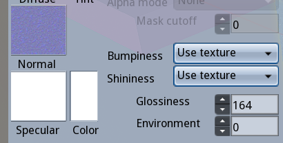
if you already know about 3d, then this is self explanatory..
if not then heres a short intro
Normal Map ~> 3d bump detail without adding polygons
Specular Map ~> determines the shininess, can be tinted with 'Color'
here is a cube i messed with, see how a normal map with blank specular makes it look:

i usually set specular to a blank texture, and use the 'color' input to change the color of the shine if i need
take a look at the very bottom where you see all those number input boxes

these are for editing the texture's dimensions..
Scale, Offset and Rotate.. H for Horizontal and V for Vertical
note the tabs that show you if you are editing the Diffuse, Normal or Specular map..
'Repeats per meter'determines how many times the texture is tiled
if you look in the upper right of this menu, theres these two buttons that are kind of hiding.. these are copy and paste buttons, so we can clone our texture settings easily

with the cubes texture params copied, we can open the edit menu of ANOTHER object, and press the 'paste' button to apply the same parameters!

if you want, you can take a look at the PBR tab, but i will not be detailing it. as you can see this makes use of Materials mentioned last chapter.. there are differences here, but also some similarities..
investigate this any time. its not crucial to our beginners lesson.
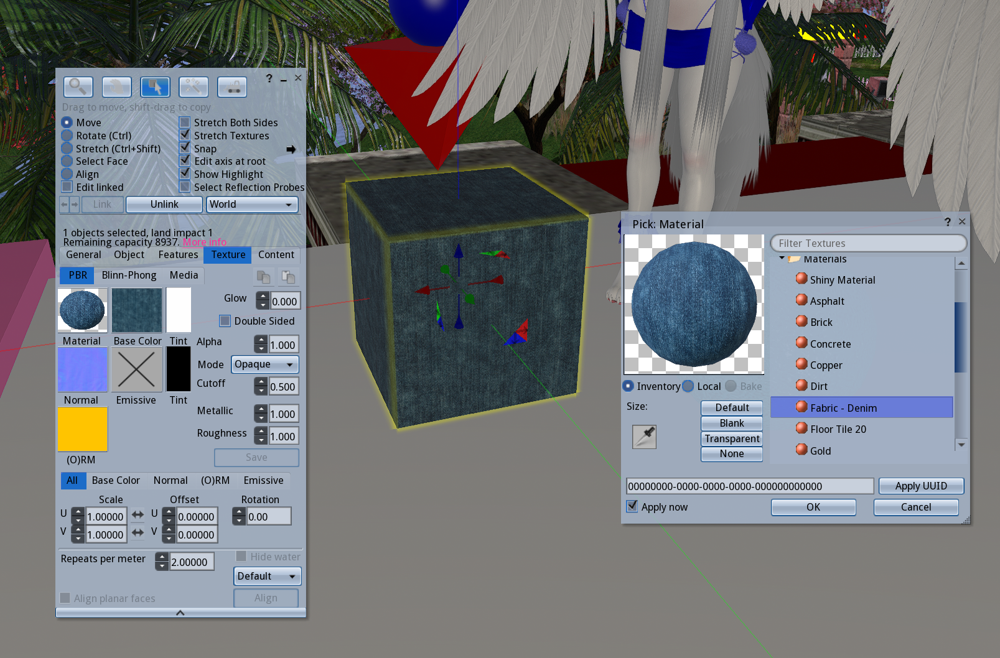
lastly the 'Media' tab!.. simply turns the selected prim texutre into a browser allowing web pages to be shown :)

..EDIT MENU CONTENT TAB

this is the 'inside' of the object.
you can drag anything into here.
 content is turned into a folder when an object is set to give/sell contents
content is turned into a folder when an object is set to give/sell contents
it is also where scripts are put in order to have effect on the object, and where the textures/notecards/objects the script may call for are put into.
now, lets dig into the manipulation part of the edit menu, which is the middle button out of the five here

here we can manipulate objects while they are rezzed, but also while we are wearing them.
move, rotate, stretch! note the shortcuts, you can do stuff quicker using them.


we also have select face, which allows us to edit only one face of an object

with Select Face selected, each face of the object becomes highlighted like so:

and in the menu, little arrows appear ~> 
selecting faces with clicks isn't always convenient
you can use these arrows to cycle through the faces.
its a little slow though,
CTRL . and CTRL , can be used to scroll through faces!
a prim after individual faces have been edited..

as you can see up there, a check box is present called 'Edit Linked'
when this is enabled, you can scroll through all the linked parts of an object (if our object is linked to begin with)
now please rez another cube
 hold shift and select both cubes
hold shift and select both cubes
 we can duplicate the cubes by dragging with shift held down
we can duplicate the cubes by dragging with shift held down

while you have two or more of your cubes selected, you'll see these two new buttons 'link' 'unlink' light up
 you can click Link and see the cubes become one object
you can click Link and see the cubes become one object
and if you need to take a linked object apart and you can click Unlink
you can do this while selecting only part of the whole object to Unlink only that,
or simply do it while the whole object is selected in order to turn all linked parts into seperate objects
textures, sounds, mesh models can be uploaded by going under Build > Upload in the top bar
it costs 10Linden per upoad..
thats pretty much all there is to editing for now.. whew
now we are primed to become an avatar in this world
CHAPTER 4: THE AVATAR
we've arrived at the final and longest chapter of the beginner manual
..to make the avatar and become present in the virtual world
i'm aware some may not feel ready or willing to spend money for an avatar...
in this chapter, i'll begin by exploring the options that are free, and then i will walk you through making a paid avatar and assembling it
there is overlap in these methods so a lot of 'avatar making' instruction will be in the latter section.
notes on spending money on lindens..
we can't deny that most players spend money for their avatars. but making a starter avatar is not as expensive as it seems.
everything varies, so you can pick and choose based on your budget. making a cheap avatar is possible.
even still, a standard furry-anime style avatar to start with, even if you bought the most expensive body and all the extras will still add up to being cheaper than buying a full price video game.
body and head are one time purchases. after that, you are fully in control of how little or how much you spend on clothes or making more avatars.
i personally spend most of my linden on maintaining land and running events, because i only wear one avatar. every couple months i'll get an AO or outfit. i think being a beginner is where its steepest, and after that unless you are going into owning land or making lots of avatars it doesn't have to be an expensive experience.
second life fashion and customization is cheaper than a lot of MMO microtransactions and gacha games and all the pieces you buy in SL can be re-used and edited for many avatars..
if you want to make your own accessories and stuff, you just need to learn blender and you can contribute to the world and make a little bit of money yourself.
there are a lot of creators that make a significant amount of their income off SL, that money isn't going to Linden Labs (cept for the fees,which have been getting higher).
a lot of them undercut themselves with the cheaper options im listing.
ig i just put here to defend creators cause a lot of people actively degrade the platform simply because artists are (under)charging for their work.
the cost of an avatar varies depending on the pieces,
i can't budget estimate for you, however i'd say the cheapest options can be done 2500 L or under, but for a more 'complete' approach you'd probably end up needing about 4000 - 7000 L for a head, a body, clothes & accessories, texture mods, and optional extras like an animation override..
wearing USD glasses, your avatar making can cost you from 3 dollars (500 L, cheap) to 33 dollars (8000 L, generous)
you don't have to buy everything at once, and can opt out of some parts or whatever. i suggest you look through the options listed, add it up together, and go from there.
i will be providing lists of bodies, heads, etc. of a variety of prices and leaving it up to you to choose what you want to purchase.
be careful and thoughtful with your decisions.
so yes, we'll be considerate of low budget options, but for simplicity and the sake of the tutorial i'll be using the 'common anime furry avatar' route that most of the people i've taught have wanted.
you can apply the language/process to the low budget options listed.
because im going to avoid getting too specific, there will be some niche avatar types or holes where you may get confused
though this manual is made to significantly reduce it, a degree of confusion is still normal cause of how complex avatar making can get
you can ask users in-world for help, we like to help newbies out because we know what its like to be new, and how wonderful the game becomes when it 'clicks'
First let's look at what we can already see from the default avatar (Classic Avatar)

this is the original second life body, and it is hiding under everyone.
there are plenty of people that use this avatar still, but most others you see have this avatar hidden under them with mesh parts taking its place.
 what a second life avatar looks like with nothing on.. you can't remove your skin or shape
what a second life avatar looks like with nothing on.. you can't remove your skin or shape
the clothes for this avatar are not rigged, though it can sometimes fit into rigged clothes.
this is called the Classic Avatar, they have a look that is entirely Prims and Textures. this was all you could work with before mesh was introduced!
if you want a free avatar, your first option is working with the Classic
there are so many free and cheap things for it and it is the easiest avatar to assemble
(links to some freebie malls will be provided real soon)
CULTURE NOTE:
some communities seem to have extreme aversion to this avatar..
theres a lot of sims where the player base is still primarily Classic Avatars. they are usually older, and very much residents of second life like anyone else
in CONEJO from what i've seen you will not be bullied for your avatar no matter how 'classic' you look or even if you look 'noob' (having a work-in-progress, broken avatar for example)
you will not be bullied for asking questions either.
people have apologized for their noob avatars before.. thats not necessary. moving forward, discard any fears you have of not looking like an ideal of an avatar.
theres no real standard and everybody has their noob phase and there is something special about everyones first avatar. the gradual development of your avatar is something to be embraced
here's an example of a Classic Avatar wearing various random things from my inventory
 here
here you can download the UV texture templates for creating tattoos, skins, and clothes if you'd like. these UVs (
SLUV)can be used to create for some of the mesh bodies you can purchase, too.
now before we go into hunting for avatar parts ..We need to understand two things
1. avatars are made of objects 'attatched' to the different bones/attachment points of the avatars body..
allow me show you how attachment works..
Take one of the prims you rezzed.. Right Click it and 'Take'
'Take Copy' works too, it leaves the original behind and sends a copy to your inventory
 Now go to your Objects Folder and Right Click the object you took..
Now go to your Objects Folder and Right Click the object you took..
mouse over 'Attach To' ..all the attachment points appear!..

most objects you get should have the ideal attachment point already set, but its valuable to be aware of attachment points
(if no attachment point has been set, the object attaches to Right Hand)
here's me after i attatched the cube to the Skull attachment point

its good to keep in mind that while you may want to click 'wear' to put things on, that will always replace whatever is already on the attachment pointthis often leads to 'mysterious' dissapearances of feet, head, hair, etc.
you can get around this by always doing Right click > Add to attach things
2. the Appearance editor is very important
if you go the Classic Avatar route, this menu is about all you will need.. awareness of this will be important for mesh avatars as well
Right Click yourself and click Edit Shape

the Shape menu under Appearance will allow us to change our proportions. Shapes are saved as entities in your inventory, as shown in Chapter 2..
as you can see, we can edit the Shape of the body with various sliders.
later on, if you buy rigged mesh parts, you will be able to edit their shape this way too.
the only thing is that some sliders do not effect mesh. it all comes down to the mesh itself. mesh bodies and realistic mesh heads make the most use out of these sliders.

if you do any work here, remember to click save! .. or if you want to make a new shape, you click the "save as" button in the bottom
now Right Click yourself again and click Edit Outfit
from this menu skins, tattoos, etc are edited/created. if you decide to create textures or tattoos, you do so here. skins can be tinted here too if they are mod
here is one of Wafa's tattoos being edited

we'll be returning to this menu later for assembling our mesh avatar. you can close it for now. it's time to begin gathering the pieces!
NOW LETS MAKE AN AVATAR
there are two ways you can find stuff in SL...
1. in-world : stores and places in the game, there are small stores, malls, or loose vendors all throughout second life
this was the only way at first, and there is still a large amount of stores in the grid
2. marketplace : second life's web store front where people can list their creations. theres lots of stuff here, but not everything. what you buy there is 'delivered' to the Recieved Items folder.
some stuff is sold both in-world and marketplace. others are exclusive to one or the other. it depends.
AND THERE ARE DEMOS ~> a lot of products have a DEMO available that lets you try out the thing before you buy it to see how it looks. heads dont always have demos, but a lot of bodies do! almost all clothes and hair have demos as well.
first, we discuss the FREE options..
for this route, you really need an open mind and to abandon strict vision.
you could also take the middle ground of buying a smaller amount of linden and creating a very cheap avatar. this can be difficult too, but gives you more to work with, especially if you decide the Classic Avatar route.
FREE OPTION 1: CLASSIC AVATAR
we've already talked about this method, but here it is again for emphasis
search for freebie places and old stores throughout the grid for free/cheap classic items.
you can make your own textures for classic avatar, thats not free but very cheap..
FREE OPTION 2: PRIM AVATAR
achieved making the desired shapes with linked prims and attaching them to attachment points.
you could also make your own textures or make do with free textures you find..
here is CONEJO's free prim avatar as an example.. it's very simple and crude, but still cute. just the tip of the iceberg of what you can achieve with prims

RESOURCES FOR PRIM CREATIONS
1.
IVORY TOWER OF PRIMS ~ an amazing in-world place that teaches you everything you need to know!
a mediative tower-tutorial mandatory for anyone who wants to learn how to work with prims.. its also a historical SL place..the build is beautiful, and there are plenty of examples to follow.
2. HEATHER HAWN'S PRIM STUFF ~ really useful information from a true master of prims! there are some tips specific to prim-avatars. Heather's avatar gallery also has some amazing examples of whats possible with prim avatar making!
uploading mesh is really cheap as well generally speaking, but may be difficult to grasp for a total beginner. if you can already do 3d, using your own creations for an avatar is another cheap option.
FREEBIES
FREEBIE GALAXY ~ a 15 floor mall with tons of stuff of varying quality.. claims itself to be the biggest in-world freebie collection
FREEBIE DUNGEON ~ a maze-like freebie mall, strange things but theres lots of stuff
BARE ROSE FREEBIES ~ a pile of 1L and random free stuff, at one of the best stores in SL. there is also a raffle that gives free items away to one random person in the region, so you can accumulate a some cool free mesh way this stuff too.
MORE FREEBIE SPOTS ~ as archived by heatherhawn, lots of must see spots on this site..
FURRY FASHION ~ furry related mall with lucky chairs
we can also find a lot of free stuff in the marketplace by conducting searches.
FREE OPTION 3: COMPLETE FREE AVATARS
SL AVATAR WELCOME PACK ~ search for this in your inventory, it will be in your library. there is a free version of LEGACY body which is one of the main supported bodies i'll be going over later.
it has no HUD or compatability with addons, but will fit into LEGACY clothes making it perfect for players who want to start on a budget. with this body you can still buy head, outfit, etc. and save thousands of lindens on a mainline body
OPEN PONY AVATAR ~ a free MLP avatar with a lot of customization! there is a huge community of support for this avatar! it's honestly amazing!
POLYCRITTER AVATAR ~ a free low poly animal crossing-style avatar
KOWLOON FENG SHUI GIRL AVATAR ~ two cute anime avatars that are free, a lot of us started with these as baby noobs
there are also heads, bodies, clothes here that are on the cheaper side (one is 10Linden, and the other is 500Linden, all clothes are under 100Linden)
even cheaper is Lucie Doll (150Linden), a literal doll (actually small) avatar with a decent amount of support (clothes, mods, etc.)
LINDEROID AVATAR ~ a free avatar set with a colorful cute cartoon robot look, modify too
MARKETPLACE SEARCH FOR FREE AVATARS ~ a search that shows all the free complete avatars available on MP!
AVATAR ASSEMBLY
..BUILDING THE DOLL..
building an avatar is a combination of different parts from different places, assembled to fit together..
like a real doll, you can mix and customize in endless ways.. it starts with a head and body base that is built upon.
this doll base will be the most expensive part. clothing and additional parts are quite cheap on their own with sparse purchase.
there are so many ways to go about it, and i obviously don't know how to make avatars of every style, but there is a trend in all types. you should be able to take this information and apply it to making any avatar pretty easily
i made this chart to breakdown and streamline the parts we need..

these are the categories we will focus on:
HEAD
BODY
TEXTURE MODS & EXTRA BODY PARTS
HAIR
CLOTHES
OPTIONAL EXTRAS (ANIMATION OVERRIDE & HUDS)
the user-run nature of SL means Bodies and Heads need 'support'..
support will refer to the capacity at which people make clothes, skins, texture mods, etc. for different the mesh parts.
its the level of compatible creations the userbase has created for different items
there is varying support on everything. you can use the marketplace to check whats around before you buy, searching 'mod' or 'clothes' alongside the desired item. i'll be mostly listing things that already have extensive support.
a lot of things also come with a 'developer kit'(or devkit which provides tools to create your own content for the mesh.
i will not be covering the nitty-gritty of modding in this lesson but it may be subject for one in the future. the earlier chapter on edit menu should inform you how to do simple things like tinting, moving/rotating/stretching and changing texture.
RIGGED, UNRIGGED, BENTO? ANIMESH? WHAT DOES IT MEAN..
you will start seeing these words a lot, so lets clear that up here. you may refer to this later if you need.
RIGGED MESH will be rigged to animate with the second life skeleton
you will not be able to edit the dimensions of these or move them around with Edit Menu
Mesh Bodies are always rigged...and clothes must be rigged for whichever body for it to work.
UNRIGGED MESH isn't rigged to move with bones.. so you can place it on any attachment point and resize it however you want. it will move alongside any attachment point you've chosen of course, but not rigged
BENTO is used to refer to the extra set of bones/attachment points that were added in an update. Face bones, Ear bones, Tail bones, Wing bones, and Finger bones are Bento additions.. if something says its Bento, it is rigged to these bones..
so, for example, a BENTO HEAD is rigged and hence can animate with blinking and such .. if you want animated ears, you must find bento ones.. etc etc.
ANIMESH refers to mesh that is rigged to its OWN copy of the skeleton..
..example: you want a little dancing fella on your shoulder. he can't be rigged like normal, else he won't be able to be small and on your shoulder, animating seperate from you..
Animesh objects are rigged on a seperate copy of the SL skeleton, so we can have rigged items that aren't actually rigged to us
..with Animesh you could have two different Ears animating differently, two bodies, an animated book and things like that..
now let's make a base for our doll! that means the head and body..
you'll need to purchase the parts first.. i've compiled a list of what i know..
- - - - - - - - - - - - - - - - - - - - -
LIST OF HEADS
there are three big groups of heads i see:
ANIME, FURRY & REALISTIC..
my expertise is mostly with anime heads so, you'll notice more of a focus on that
ANIME heads can actually be modded to fit into a furry look as can be seen with many in CONEJO
ANIME HEADS
CHERRY HEAD
MARKETPLACE LINK
PRICE: 300 L
UNRIGGED MESH
SUPPORT LEVEL IS GOOD
very popular in our communities nowadays. the eyes, mouth, and eyebrows are flat textures, so the possibilities are many!
if you choose this head, visit the Cherry Shrine , a wonderful website with tutorials on modding and a compilation of Mod stores for it
personal observations
pros..
very moddable, eyes and mouth are linked parts so they can be resized with some edit-menu knowledge,
growing community support, looks great in most lighting, unrigged allows it to be moved and resized
cons..
rigged hair won't really work, will likely have to make your own skin for it if you aren't using a flatcolor, creator is no longer in SL so it won't be updated, may leave more to be desired in terms of expressions for some
THE ASR HEADS
AEON TYPE ALITHEIA TYPE
PRICE: 650 L
RIGGED MESH (bento)
SUPPORT LEVEL IS GOOD
the other popular anime head..
there are two models to choose from, the Aeon having a more big-eyed fake moe look while the Alitheia is more realistically proportioned
mods are cross compatible for the ASR heads.. you can make your own or buy some from the marketplace. prices vary.
i'll be writing a tutorial on the ASR in the future, since it is such a struggle.. it is well worth it though, for the kinds of avatars that can be made with it.
personal obsevations
pros..
cute and pretty, can achieve a unique look with simply tinting, a lot of versatility with expression due to the Bento, compatible with a lot of rigged hair, very easy to make eye mods, responsive to shape editor
cons..
complicated HUDs and folder structure, may take some time to achieve a look, rather small size due to being rigged, has a tendency to look off in certain lighting, the scripts cause problems sometimes. can't be bald because the skull is mishapen.
UTILIZATOR HEADS
AnnieMay Venus Chibi Mars Momo Rikugou
PRICE: ~600 L
RIGGED MESH (bento)
SUPPORT LEVEL IS GOOD
personal observations
pros..
really nice HUD, easy to edit, expression versatility,
compatible with rigged hair, mods tend to be cross-compatible between heads,
creator is active, skull doesn't look messed up without hair, mesh is more polished has good support when it comes to premade skins,
cons..
'utilizator-ness' of the shape is hard to escape even with mods which is hard to catch without a demo, modding community more focused on a semi-real doll look which works for some but may not be what others are looking for when they think 'anime'
TONKATIHEAD
Kujira Yumeme Mitsukuri Rabuka Yoshikiri
PRICE: 889 L
RIGGED MESH (bento)
SUPPORT LEVEL IS VERY LITTLE
personal observations
pros..
has a DEMO, complex yet welcoming,
interesting things like inset eyes and flat-shading so it looks as intended in all lighting, 3d eyelashes,
a lot more responsive to shape editor than other heads, very BJD-like, HUDs are solid, mesh is well made, creator is active
cons..
more fixed on the semi-realistic side may turn some off
from buying this, it's recently released so support isn't widespread yet and it needs more attention
VINCA HEAD
IN WORLD VENDOR
PRICE: 300 L
UNRIGGED MESH
SUPPORT LEVEL IS ALMOST ZERO
personal observation
pros..
super cute shape, very very cute and unique, it being unrigged allows some interesting things also
cons..
could use more support and attention, seems archaic to mod, unrigged animation has glitches sometimes
FURRY HEADS
i don't own any of these, so i cant give my personal input/comparisons like i did with the anime heads..however all these heads have DEMOs you can try on so you check for yourself
the following are all Bento Rigged heads and all come with resources for modding
HAPPY PAW HEADS
MARKETPLACE
PRICE: 170 ~ 300 L
various heads to choose from, i think they all have some degree of support, Foxcat being the most popular
they have a cutesy doll-like look to them and are mod friendly
TUNI HEAD
MARKETPLACE
PRICE: 650 L
a head with an anime toon style that uses 2d textures for eyes and mouth like how the Cherry Head does. there are some mods for it on the marketplace but not many.
UTILIZATOR M4 FURRY HEADS
Kemono KeMomo Kitsune Bakemono Chipmunk
PRICE: 600 L
these heads have more of a cartoon-anime look than the rest of the furry heads listed
they have some cross compatibility with eachother, including between anime M4 heads mentioned..
support is more spotty for the M4 furry heads than the M4 anime heads, however
CERBERUS HEADS
MARKETPLACE
PRICE: 349 ~ 799 L
well supported heads, and the animations/expressions for these are beautiful
they cover some niche animals like shark, dragon, horse heads
ANIMA HEADS
MARKETPLACE
PRICE: 640 L
selection of heads with really beautiful sculpted stylish shape. they also cover more species you don't usually see heads for, and the creator is very passionate about it all.
(birds, bugs, and more)
AUGUST HEADS
MARKETPLACE
PRICE: 950-1500 L
not a wide selection like the ones perviously listed, but some very good quality well supported furry heads worth listing
finally, i'll link the two most used realistic heads here too.
Lelutka Heads & Genus Heads
there's already so much documentation about these and they are also really overpriced but i know there's a chance someone reading this might want that kind of head or wonder about it so i don't want to leave it out.
most of the SL playerbase wears these heads, so the support for them is overwhelmingly high
- - - - - - - - - - - - - - - - - - - - -
LIST OF BODIES
first, we'll begin with 'main bodies', which are just the most worn bodies.. they have the most support, so i simply mean they are the 'main' focus of the SL creator base
when we get to clothes, i'll be focusing on stores that support 'main' bodies, the clothing and fashion economy in Second Life revolves around them..
i only know so many stores however, so you'll have to be willing to dig a little especially for the more niche bodies listed.
i will also list bodies of different types with varying support that are also notable because of the niche they fill or for their affordable prices
remember to DEMO when you can to see if its for you..
main bodies go on sale, from time to time, down to half off.. usually for the holidays
TOP SUPPORTED BODIES
EBODY REBORN
PRICE: 3500L
IN-WORLD STORE
notes:
this body has a very beautiful mesh with a thicker shape
the versatility is subjective.. it can be shaped a lot of different ways using deformers but its fixed on the curvy side.
has the capability for fatter shapes which is a really nice thing the other bodies don't have
the support for this body has been flourishing, and seems to be the top body worn right now.
it is modify and it has a lovely HUD
some of the addons available for purchase Teacups, Mounds and Juicy Rolls are 750L each and have a pretty good amount of support in terms of addons. theres also a bunch of other addons for this body out there in marketplace
LEGACY
PRICE: 5500L
IN-WORLD STORE
notes:
legacy sells a Standard body, a 'Perky' body, a 'Bombshell' body, and a 'Male' body. these are all sold seperately at the same price, with Standard and Perky being the most suported.
the body tends to go on sale for Black Friday at 50% off, a price that makes it a lot more worth it.
and i mentioned earlier there is a free version of it in the SL welcome pack, clothes for legacy will fit that perfectly. alongside eBody it has the most fashion available currently.
the shape of this body is really nice looking, and it has good versatility with the shape editor alone compared to the other bodies. deformers can supplement this as well. i've seen people achieve a truly flat ass which is impressive when comparing to the other bodies
its my personal favorite body to wear, but it has some glaring issues to be aware of if you are considering buying. first it is not modify, and BoM is not enabled by default..
the HUD is shitty and laggy, which can be forgiven if you take it off when you dont need it. however, the terrible HUD creates another obstacle for beginners.
MAITREYA LARA X
PRICE: 2750L
IN-WORLD STORE
notes:
if you decide to go with Maitreya, there is some important context
to know it used to be the most supported body in second life until eBody and Legacy came along.
it was hard to rig for and considered outdated, so support dwindled in the early 2020s
in 2024 Maitreyad release an updated body, the new, improved 'Lara X', and some creators have reintroduced it to the bodies they choose to support
Maitreya Lara X comes with the Original Maitreya Lara in its extras.. which has a huge amount of options for clothes due to its previous status
the Lara X is an improved version of the original with modified mesh and improved rigging.. but i still find the anatomy to still be severely lacking compared to Legacy and Ebody. it is also the least versatile of the three, being very fixed in its shape.
still the pricepoint and support for the original make this body worth buying for many players. the new Lara X is the least supported, while its included Original version might be the most supported mesh body of all time and with some time it will probably begin to compete against the other two because of its pricepoint.
there are two available addons for Maitreya, Petite which is 599L and Flat which is 499L
BELLEZA GEN X
PRICE: 2345L
IN-WORLD STORE
Belleza's situation is similar to Mait.
the Gen X is a reboot of an older body made to keep up with the market. Support for it isn't crazy, it shouldn't be too hard to find clothes but it seems like a hunt compared to Ebody and Legacy.
there are four bodies being offered at their mainstore, Classic and Jake being the most supported.. Dainty i have personally not seen any support for, but the Belleza bodies are the ones im least familiar with.
Belleza Jake is second to Legcay Male when it comes to 'male' body support so that is primarily why i am listing Belleza here. the mesh of the Gen X bodies is very high quality though.
i would say the versatility and aesthetic is a few notches higher than Lara X too, but it's hard to say if the future of support is on par with Lara X.
MORE BODIES AND AVATAR SETS
HUMANOID
ANATOMY BODY ~ price: 4,499 L
a really versatile 'male' body, best looking one in my opinion even though its worn less than Jake or Legacy. it's a recent body but theres a chance support will ramp up.
KEMONO BODY ~ price: 900 L
historically a choice for animefurry noobs due to its low price and decent amount of clothes. there are a couple of addons made for it, still i wouldn't say its versatile in terms of shape at all. proportions are extremely stylized. has human feet option and paw options.. its a choice if you want a cheap avatar, most people i know eventually 'upgrade' from this one.
BAKEMONOYA DOLL BODY ~ price: 1,200L
a doll body, human sized.. very specific, and no shape versatility. it doesn't really have support but it seems to work well with some clothes rigged for 'main' bodies. the mesh is lovely, i haven't seen a ball jointed avatar that compares.
PIGGU JUNE & PIGGU JOHNATHAN ~ price: 900 & 700 L
avatars with a fat body type, which is hard to find in SL. theyre affordable, on the lower poly side but could really use more clothing support and BoM. it can still be modded and i've seen some cute furrys made with the June.
dev MUSCLE BODIES ~ price: 2,800-4200 L
hyper muscular bodies, ranging from regular body builder to hyper fanatasy muscle.. support isn't amazing, but it is BoM. mesh looks lovely in my opinion.
REI'S MACRO AND MICRO BODIES ~ price: 700-900 L
bodies for those who want to be a giantess or a tinytiny fairy. downside is there is a total of one bodytype possible. no support but BoM and unrigged items can take it somewhere if you're down with the shape.
JOMO AVATARS ~ price: ~2500 L
full furry avatars with head and body sets. many animals. doesn't have zero support, but seems hard to find clothes. good as a complete set for those who just want an avatar out the box. sold in seperate parts/pieces in-world.
TOON/CHIBI FURRY
KIOPHEN AVATAR ~ price: 1000L
a moddable, niche chibi kemonostyle monster avatar.
OPEN PONY AVATAR ~ price: 0 L
pony body mentioned earlier. has a lot of support, with plenty of wigs clothes and more for purchase.
POLYCRITTER AVATAR ~ price: 0 L
a cute chibi low poly avatar in the style of animal crossing, mentioned it earlier too. has a little community of support in the marketplace.
PUCHIMONO AVATAR ~ price: 800L
another chibi kemonostyle avatar that has a community going. has some support too.
WIZZLE AVATAR ~ price: 640 L
cute weasel like avatar body that can be modified
PEAR DRAGON BARLETT & BOSC ~ price: 600 L
fat pear shaped dragons! two types!
WYNXWORKS ~ price: 350 ~ 1000 L
amazing tiny animal prim avs!
PLAYTHING ~ price: 750 L
super moddable cute plushy-like avatar
TELEVSISON ~ price: 995 - 1400L
giant fish avatar, werefish avatar and plush furry avatar
POOL TOY SUITE ~ price: 995 L
pool toy mod set
TOON
TENFACED'S TOON BODY ~ price: 640 L
big long limbs and arms with small torso, lots of possibilities. some sonic-style mobian avatars wear this one.
GLUBBY'S TOON BODY ~ price: 500 L
nice and simple toon body
CHUUNKY BODY ~ price: 300 L
cute chunky lowpoly body thats especially awesome because its compatible with SL UV!
PICTO PERSON AVATAR ~ price: 350 L
avatar that looks like people in signs!
BALLOON CREATURE AVATAR ~ price: 350 L
balloon creature avatar with BoM and simple modding!
FERAL
these bodies deform the second life skeleton in order to work, they are all beautiful and full of features. on the expensive side in terms of avatars but you get your moneys worth. i've seen support for all of these.
ATC ~ dragons
TEEGLE & WATERHORSE ~ different horse avatar brands
TWI ~ wolf, cat, lion, fox, deer
HELLHUND ~ popular dog body
BIRD E MART ~ butterfly, wyvern, griffin, bear, eagle
DELPHINUS ~ dolphin
UNLEASHED ~ pig, chicken
MMnM Toon Snek ~ snake
PREHISTORICA ~ fantasy dinosaurs and dragons
AVATAR ASSEMBLY
now that you have the first pieces of the avatar, let's assemble it!
i recommend you do this in a sandbox, i'll be referencing things from the CONEJO AVATAR SANDBOX area
Go into your inventory, under the Worn tab, and remove everything you're wearing
you can always deatch everything inside a folder this way

Now look for this box, click it to recieve a folder

Find the folder in your inventory and wear the tattoo, and see how you can color yourself with the appearance editor

we'll get to where you can find detailed skins of different types later, but this flat-tattoo skin is a good start, at least in this early stage of assembly. for some, this will be all they need when it comes to skin.
AND MORE AVATAR STUFF TO KNOW..
BAKES ON MESH (BoM)
BoM is a system introduced in recent years that allows mesh to use the classic clothing/texture system
mesh that is not BoM enabled will require 'Appliers' for texture modifications.
(appliers are just scripted items that apply textures to the mesh)
some of the heads i listed are BoM, but most aren't.
all main bodies however, have BoM.
if the word be somewhere in the description or ad for the item, its probably BoM
in the past, you had to hide the classic body with an alpha, but with BoM enabled parts, they replace it
i know it can be confusing, here is a chart that visualizes BoM:

as you can see the classic body overlaps the mesh on the third one because its not BoM, and needs alphas to hide the classic body.
and if you wanted to apply those tattoos and skins on it, you'd need an applier.
with the BoM enabled mesh however, applying skins and tattoos worked directly from the inventory like it does for the classic avatar.
UNPACKING & UNBOXING
you'll find almost every product you find has to be 'unboxed'
think of it like in real life, when you take something out of its packaging..
the original way of doing this is rezzing the box on the ground, and right clicking it to open and recieve the folder of contents
nowadays, many opt to use an 'unpacking script' that sends you the content folder upon wearing and clicking instead. (often times automatic)
boxes with unpacking scripts tend to make it obvious by having something along the lines of (wear or add to unpack!) in the title. other times, they attach a HUD and make you click that.
now let's try unpacking our body and head..
depending on the item, three possibilities:
1. you purchased the item in Marketplace, its in Recieved items as a folder with everything in it and it doesn't need unpacking
you can simply move the folder out of Recieved Items and sort it into your regular inventory for ease of access
2. you purchased the item in Marketplace, its in Recieved Items but its just a single object
start by adding the box to see if it can be unpacked with wearing. if nothing happens, then drag & rez it, and Right Click > Open to send the folder of contents to your inventory
3. you purchased the item In-World, and its in the Objects folder as a single object
follow the same procedure as number 2!
now find the folder with your Head, and start with wearing the 'Head Alpha' if it includes one
i also included one in the tintable skin box

with the Classic LL head hidden, wear your new mesh head, which should have the word 'head' in the title.
sometimes, there are various parts you must wear like seperate eyes, that is the case of heads like the ASR.
i'll be using Cherry Head as the example.
so you'll probably look like this now:

the neck-gap is because of the alpha, there are some head alphas that don't hide the neck.
i highly recommend you get this free neck extender to avoid neck gaps all together when you get around to adding your body
now you can also wear whatever Shape is included with your head,
this Shape is likely a better starting point than whatever is included with your body if you are using a rigged head.
you can try the Shapes included with your body too of course. when you're ready to customize your shape, you can do so how i taught you in the beginning of this chapter
next, find and wear the HUD in your head folder
HUDs are wearable user interfaces made with prims,textures and scripts that are used for a variety of things.
in the case of heads, HUDs are primarily used for expressions/animations. it depends from object to object. HUDs have their own dedicated attachmentpoint
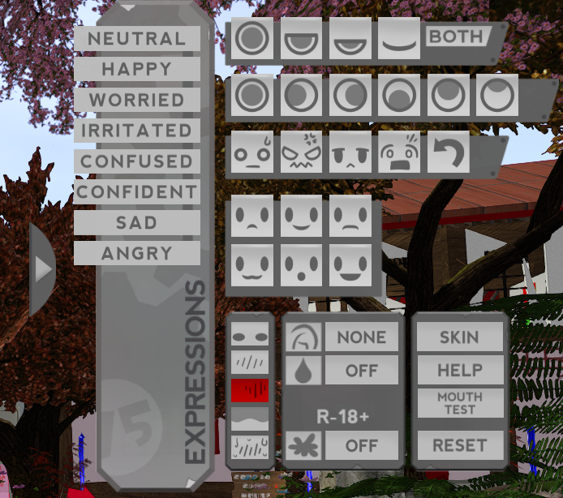
the cherry head HUD, for example...
if a HUD is mysteriously off screen, you can right click it from your inventory to edit it. scrolling out lets you move HUDs in and out of the screen and you can resize them this way as well.
now find the folder containing your Body, all you will need to wear to start is the Body itself and the HUD.
it should just work, but if you are using Legacy
you must to enable BoM through the hud
here is the Lara X HUD as an example of a body HUD alpha menu
body HUDs generally have an alpha interface for hiding the parts and then some tabs for extra customization.

when you are not using the body HUD, its best to detatch it. you will not have to be constantly refering to it and the scripts and textures cause unnecessary lag.
there we go, here's my example base. i'll be making a green character for the tutorial

i tinted the body by changing the color of the tattoo, and selected faces of the head with the edit menu to match the color on the head..
but what if this flat color isn't what you want? what if you want some shading? and what about custom face mods! well.. this is where you have to hunt!
FINDING TEXTURE MODS
1.) HEAD MODS
these are usually worn with an applier.
searching marketplace with terms like "Cherry Head eye Mod" or "ASR eye mod" or "Happy Paw eye mod" will show you the options. prices really vary.
2.) BODY MODS
you find body skins the same way, with searching your body and 'mod' in the marketplace
3.) BODY AND HEAD MODS
this kind of mod includes textures for both a certain head and body, sometimes even for other parts too. you don't actually have to use both of them, and can combine the skin with whatever head if it works.
often times you can tint the textures you buy to use them as shading
you can also layer tattoos and markings with BoM
if you buy any appliers, you just wear them to apply them. avoid non BoM skins for your body if you can, you'll probably only have to use appliers for your head
here's the example avatar now.. i applied mods on the eyes, mouth and eyebrows, as well as a BoM tattoo i made myself for the nipples.

the head and body are both blank textures still, for simplicitys sake. you can apply whatever mods you choose to buy or not buy.
EXTRA ATTACHMENTS
before we dive into hair and clothes, we'll explore the options we have to add things to your character base.
one type of attachment you may seek is ears or tails,
and Wafa for example, wears paw addons on both her hands and feet.
small list of stores for parts
**DOUBLE CHECK THE COMPATABILITY OF THE ADDON BEFORE YOU BUY .. EARS & TAILS WILL PROBABLY WORK REGARDLESS OF BODY**
APRICOT PAWS ~
MARKETPLACE
furry hands & feets. compatible with a huge variety of bodies! these have amazing support, with plenty of mods and even shoes, socks and more made for them.
ANIMA ~ MARKETPLACE
scroll past the heads and you'll see some options for legs! similar options to apricot paws, but a little cheaper and different shape variety.
not as crazy with support like apricot paws but almost at the same level. there are plenty of mods using them and theyre beautiful.
HAPPY PAW ~ MARKETPLACE
mostly tails, but a good selection of ears too.. super affordable
CATS EYE ~ MARKETPLACE
hand paws, and various types of legs! tails too. you probably want to use the search to find them.
AII ~ IN-WORLD
various types of appendages, ears, tails, wings, etc. lots of high quality stuff
if theres something you can't find, try a search in the marketplace, theres a huge amount of ears and tails of all sorts
ATTACHING ADDON LIMBS
open the folder containing the addon you want to wear
Wear the option that matches your Body. You may be provided with different variations to choose from..
if the item is BoM, then it should just replace your feet or hands.
if not, then wear whatever Alpha it comes with to hide the area you're replacing.


Now you can attach the HUD if it comes with any and do adjustments as you like.


Alternatively you can hit the Edit Menu if there are things you want to edit (texture/color/etc) directly.
BoM enabled usually conforms to whatever body skin you have, but if not you may have to do some work to 'match' the colors.
ATTACHING OTHER PARTS
the process is about the same, except for the BoM part.. wear the desired part, check for any HUDs inside, and do any editing you need to do.
here's the avatar now, with ears and tail attatched.

HAIR FOR AVATAR
there are three main types of hair in SL, Rigged mesh hair, Unrigged mesh hair, and Prim Hair.
RIGGED HAIR
these hairs are rigged to the skull, and parts of them move along the body as a result.


rigged hair can be nice, but make sure you DEMO any of it to make sure it actually fits with your head
..thats the thing.. rigged hair has a hard time fitting on anime &
furry heads sometimes. some are fine, its case to case. ASR heads fit well into rigged hair.


UNRIGGED HAIR
hair that isn't rigged, usually shorter styles. unrigged hair can be a whole single head of hair, or be various parts mixed together.


a combination seen often is a rigged hair with unrigged bangs placed in front.


unrigged hair is more ideal for unrigged heads, because you can resize it.
PRIM HAIR
the old style of hair, but still wonderfully effect. made out of prims and sculpts, and usually flexi prims.


these can be resized and edited like rigged hair, but allow for longer styles that are flowing.
i personally love to mix unrigged pieces with prim hair the most. a lot of prim hairs can be taken apart and edited strand by strand, which is super cool.
prim hair can be a way to take the uniqueness of your hair to another level.
WHERE TO FIND HAIR
FREE ANIME HAIR ~ a huge pack of free unrigged hair pieces you can use to build your wig! you can also pick up a free pack of hair textures here!
..ripped from old anime dress up games..
1 L$ flexi hair packs ~ 12 packs of old flexihair likely from discontinued sources ..all modify
LALA MOON ~ flexi prim hair, and some unrigged and rigged mesh hair too!
CURIOUS KITTIES ~ alternative style prim hairs!
BLKBUNI ~ modern flexi prim hair, modifiable black hairstyles!
ALLI & ALI ~ hair store going since 2007, prim & mesh!
AYASHI ~ prolific hair maker, mostly rigged mesh. their older styles are modify, and more anime style
OLIVE ~ another hair maker that makes a lot of cute hair, mostly rigged. modifiable!
DPYUMYUM ~ detail textured hair rigged and unrigged
TRAM ~ another detailed hair store with rigged and unrigged styles
YABAI ~ modifiable anime-style hairs rigged and unrigged
KURURU
~ modifiable anime-style hairs, mostly rigged and long styles
RAVEN BELL ~ modifiable unisex hairs, rigged and unrigged, versatile and some pieces for mixing and matching
BONBON ~ a hair store with a lot of great unique anime inspired styles, but tend to be rigged and not fit a lot of heads
HAIR DESTINATION GUIDE & HAIR SL LIST ~ destination guide has a good list on all the 'top' most popular hair stores, majority rigged mesh! i've tried a number of these myself and they're great stores..
.. and the Hair SL list is an a-z list of many many hair stores
CREATING A UNIQUE WIG
hair styles for avatars can go pretty deep.
using the edit menu, with transparency and tinting.. a 'frankenstein hair' style that is more personalized and unique can be achieved
you don't have to put the pieces together in any particular order, this will simply be a demonstration/break-down of how i put together wigs for an avatar
the first piece to take note of is the main bangs.
these can be mesh or prim. most of the ones i use are from the free hair pack, but you can also single out bangs from full hairs with the edit menu

a trick i have is keeping the front bangs the same, while switching out back pieces to simulate hair style changes that are consistent.
i find whatever piece is here to be a good starting point because of how important it is in the framing of the face.
next we have side bangs, sometimes the main bangs you choose have this kind of piece already.
there are side bang parts out there to use in the freebie anime hair box and some are sold too.
you could also single out ones from full hairstyles you like with alpha-ing, if its possible

the goal at least with anime hair would be to cover the whole front part, so that there is less unnatrual cut-off from whatever back piece we choose.
finally, you can accentuate the front part with prim-sculpt hair pieces or whatever mesh pieces you want.

in the case of this avatar i filled up the inner gaps with some prim strands to frame the jaw better
now you can fill out the back however you want. as long as there are no pieces clipping through the front, you can combine the bangs with back piece, match texture/color and have a full wig

i build these pigtails out of pieces i got by unlinking prim hairs.. i know its not the most beginner friendly, but its just to show you its possible to build your own prim hair with some time and effort

of course, you can fill the back with mesh pieces as well

this mesh back hair is made of two pieces, pigtails that i alpha'd out and one of the backs from the freebie pack. as you can see, all the textures are matching, so it feels like one wig


remember you can also rez and link unrigged mesh pieces. this can make stuff easier and save attachment points.
making prim hair and editing it is really hard to do while you're wearing it, because they are huge linksets that you cant take apart while its worn.
to create and edit prim hair its also best to work in a sandbox, and you can rez out a head to use as a mannequin guide.
if you need more information on prim building, you can go to the beginning of the chapter and check out the prim resources.
SAVE YOUR BASE AVATAR
now would be a good time to save your avatar as an Outfit, so that you can save your work and go back to this 'base' easily if you want to make more outfits
open the Outfits menu with the t-shirt icon button in your toolbar
click the 'Save As' button at the bottom and name your outfit, ideally with a naming convention you can build upon

now right click the outfit and click 'image..'

set a thumbnail for your outfit by clicking the lil camera icon, and clicking 'take photo' ..

now if you go to the Outfit Gallery tab of the Outfits menu, you will see a thumbnail for your outfit

reminder: these thumbnails are free to upload, so if you like the outfit gallery, don't be afraid to give all your outfits thumbnails. you can change it anytime.
TIP: you can set thumbnails for any folder in your inventory this way too! so when you mouse over the folder, it will show the image!
we're almost done! this is the last big section before we go over some extras and wrap up the manual!
CLOTHING YOUR AVATAR
finding clothes can be a more strict process than hair due to the fact that we are limited by the things rigged for our avatars.
with BoM you can use classic old-style prim&texture clothes.. which opens up your options a lot if you are into it
the options are also admittedly very skewed to the skimpy side.. i'm always looking to find more modest things but, still a lot on the revealing side
there are lots and lots of options available though, and the fashion in SL is always growing and changing
LIST OF
COMMON CLOTHES SELLING PRACTICES FOUND IN SL
..one package with all sizes and colors, modify enabled
sadly not common enough.. but.. the ideal
..each color/texture seperate (often no mod..) as 'Singles', charging a higher price for the 'Fatpack' containing all the textures & sometimes extras
..selling the same as previous method, but with the modify enabled version being Fatpack exclusive
..sell Single as modify, allowing you to save money by buying the white version and tinting it any color
..selling singles and fatpacks both without mod (this is the worst)
..or a recent business model where they sell 'by size', giving you the modify enabled item but only in the size of Legacy, Ebody, etc. (i think this is the best deal, especially for newbs..)
SHOPPING FOR CLOTHES
instead of listing it all here, i've made a seperate page with a list of clothing shops i know of.. i will be updating it with more things over time.
you can open it in a new tab and go through it when you'd like.

i'll be writing all the most useful basic tips for buying clothes and creating outfits below. it will make it easier to sort through the different shops, so i recommend you read the rest of this section first.
start with buying only one outfit that you really love
don't be afraid to spend extended time wearing a DEMO to decide if you like something, and if you really love it then buy it.
TINTING MODIFY CLOTHES
the universal rule of tinting is that you need a white base to work with..
as long as you can set whatever piece you have to a white texture with minimal shading
you can use the edit menu to tint it, adding a world of versatility to the piece

to make your life easier, you can create a prim color palette by rezzing various spheres or cubes and tinting them different colors.

this can help you decide and compare colors for your avatars palette, and you can then use the eye dropper tool to tint the different parts of your piece

buying something modify that you can tint and use in a lot of outfits is better than buying a bunch of no mod stuff.. but if you don't see yourself wanting to tint or edit clothes at all, then you can disregard this completely.
searching for only mod clothes limits your options by a lot, sometimes forcing you to have to consider buying a fatpack when you could buy a lot of single pieces for the same price.
but it can be much better to have a smaller amount of things that have more usability
when to buy Singles:
..saving money on your first outfits
..or if they are modify buy the one with texture that works as a canvas
..or if you really only want one of the colors, and don't plan to want more /
you have no interest in tinting
..or if they are sold by Size Packs, in which case its probably modify anyway
when to buy Fatpacks:
..when modify permissions are fatpack only, and you want the option to tint and recolor
..the piece pleases you and you want to get more value out of it
..sometimes wiser to buy a fatpack every once in a while instead of spending more buying many different singles
..the item is an accessory or modular part that you'd use often for many purposes
in november, for black friday, a mass amount of clothing stores go on sale and the price of fatpacks and everything are greatly reduced. some people hold off on shopping altogether until then
and like we did with hair, we can alpha out parts of clothes to give them flexibility to combine with other things..
sometimes your body can fit into clothes that arent necessarily rigged for it by alpha-ing out certain parts or using deformers. some clothes come with a small, medium and large rig. some niche bodies can fit into more clothes this way
here's an outfit that isn't rigged to my body but fits fine after wearing the alpha it comes with
the dress is from bare rose

i'll share some examples of different outfits..

sample outfit 1 ~ modest casual
a cute outfit achieved with a single piece
outfit from spectacled chic

sample outfit 2 ~ multiple part look
tinting various different pieces to match palette
top from miwas, bottom from cheezu & choker from spectacled chic

sample outfit 3 ~ classic prim outfit
old style stuff is adaptable to mesh bodys with BoM and some resizing
dress is from edelweiss

sample outfit 4 ~ costume with tinting
this is a maid look achieved with just one tinted dress.. and a prop
dress is from cheezu and tray is from edelweiss
 sample outfit 5 ~ bikini / swimsuit
sample outfit 5 ~ bikini / swimsuit
just one of the many outfits that come up in second life experience.
bikini is from wretch
also, there are blogs dedicated to second life shopping events
events are like little malls with the latest releases from a variety of sellers, often running once a month or once every two months. sometimes they are themed sometimes they arent.
these same blogs can be used to keep up with sales, imo you are better off directly subscribing to the stores you like to be notified directly when they are having a sale or participating in an event.
EXTRAS FOR AVATAR
ANIMATION OVERRIDE
a HUD attachment that animates your avatar,
overriding the default animations for standing and walking
often include a variety of "stands" that cycle through, along with ground sits, typing animations and more
AO OFF VS AO ON


BENTO AO ~ there are non-Bento and Bento AOs. Bento AOs have finger movement.

when you go to an AO shop in world, you can DEMO the AO by standing on booths.

the booths themselves are vendors, allowing you to buy the full version of the AO (
by clicking on the add or 'full set' button or the loose animations (
by clicking 'pay' on the arrows)
you can customize and make your own AOs by adding animations to an AO HUD, or by using firestorms built-in AO.. a seperate tutorial on making AOs will probably be written in the future.
AO STORES
KUSO ORACUL ~ 300 ~ 600 L
AKEYO ~ 1900 L
and one 1 L AO
SEmotion ~750 ~ 1250 L (& two AOs that are free for avatars under 90 days old)
BODY LANGUAGE ~ 2100 L
and probably a lot i don't know about in the marketplace
fixing/adjusting avatar hover height..
sometimes your avatar is sinking into the ground, or floating inches above it..
to fix this, you must adjust your hover height

you can change your hoverheight by right clicking yourself and finding it under Appearance, or you can use Quick Prefs for fast access to it
OTHER USEFUL STUFF
WHATCHA LOOKIN' AT?
499 L
has your avatar turn its head to people talking, or turn its head to people nearby.
also can be used to pose head if needed, and enables head movement in mouselook
MULTI BENTO POSE HUD
300 L
HUD that can be used to pose your avatars head, arms and hands in various ways
BENTO ENHANCED HAND HUD & BENTO ENHANCED TAIL HUD
0 L
must have free HUDs for animating bento hands and tails!
FOLLOW GRAB HUG HUD
99 L
HUD you can use to grab, hug and follow your friends
MAKIKO INTIMACY HUDS
290 ~ 390 L
wonderful HUDs all with animations for two so that you can animate cutely with your friends. one can be used to emulate walking together.
CREATAH TYPER
399 L
best customizable typer, which activates everytime you type.
theres plenty of cheap and free typers out there too.
HEAD SCRITCHER
99 L
interactive head patter that lets people drag a hand cursor to pet you
FLUFFY PETTER
299 L
head patter with different features and addons
LITTLE PIERCE MMD DANCERS
a bunch of free mmd dances. animations with music, activate with a text command and animate all the people wearing it!
that should do it for your first avatar and some! if theres anything you want that you don't see listed, you can always search the marketplace or in-world
EPILOGUE: places to go
visit
CONEJO ISLAND's lobby for a collection of landmarks, a sim hopper, gestures, a dance HUD
HEATHERHAWN COOL SIMS LIST ~ good list of sims all sorted!
CADNOMORI SL RESOURCES ~ various useful tutorials and information!
SECOND LIFE DESTINATION GUIDE ~ linden labs destination guide with lots of categories
thats all for the manual ~ i hope it helped & informed you.
now you're off to explore second life on your own and experience its worlds and people...!
PLANNED FUTURE SL WRITINGS (*no promises*)
~ exploration guide
~ mesh upload
~ owning land
~ modding & creating appliers
~ making your own AO
~ ASR head mini-guide
~ about conejo
TOP ~ written by sofa (known as wafa in-world)
{kind=link}
{kind=link}